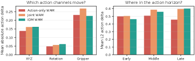
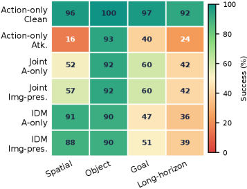

제출: 2026년 7월 16일 · ϵ=0.06 (ℓ∞) · zeroth-order (finite-difference) · 8 queries/replan
한 줄 요약 (TL;DR)
Action 생성과 미래 예측(imagination)을 결합한 World-Action Model(WAM)이 시각적 관찰에 대한 작은 적대적 교란에 취약함을 최초로 체계 분석. Action-only 공격은 미래 예측을 무시하고 action만 왜곡, Imagination-preserving 공격은 λ 가중 라그랑주 완화로 미래 예측은 그럴듯하게 유지하면서 action은 실패시킴. 블랙박스 zeroth-order 최적화(17 forward/replan)만으로 LIBERO Action-only WAM 성공률 96.5%→43.1% (−53.4pp). Joint·IDM WAM으로도 35~40pp 전이(transfer). 기존 방어(Gaussian blur, JPEG-noise) 실효 없음.
1배경 · 문제의식
최근 로봇 정책은 Vision-Language-Action과 세계 모델(world model)을 결합해 "미래를 상상하고 행동한다". 이 결합은 통상적으로 강건성에 도움이 될 것으로 여겨졌으나, 저자들은 반대로 상상(imagination)과 실행(action)이 분리될 수 있다는 점을 지적한다. Fig. 1의 관찰: 실패 에피소드는 action shift가 크고, 그런데도 미래 예측 shift는 성공/실패 사이 큰 차이가 없다. 즉 공격자가 미래 예측의 "그럴듯함"을 유지하면서 action만 무너뜨릴 여지가 있다.
2핵심 Contribution
WAM용 통일 공격 프레임워크(BadWAM) — visual observation에 ℓ∞≤ϵ 교란만 가하는 블랙박스 공격을 정식화. 공격 목표를 (a) action 최대 왜곡, (b) 미래 예측 왜곡 제한으로 분리해 정의.
두 가지 변종: Action-only(Eq. 8, 순수 실패 유도)와 Imagination-preserving(Eq. 9, 라그랑주 완화로 미래는 그럴듯하게 유지). λ 하나로 stealth-강도 trade-off 조절.
실증: 블랙박스 zeroth-order(17 forward/replan)만으로 LIBERO 성공률 폭락(최대 −53.4pp). 서로 다른 WAM 변종 간 공격 전이(35~40pp)와 기존 방어의 무력함(AUROC 0.65~0.68) 보고.
3Method
위협 모델
공격자는 전처리 전 시각 관찰만 교란할 수 있고 모델 가중치·기울기 접근 불가. Action-only 시나리오는 action 관측만, Imagination-visible 시나리오는 예측 미래 rollout도 관측. 훈련 오염·물리환경 변경·프롬프트 주입은 대상 아님. 기본 예산 ϵ=0.06(ℓ∞, 픽셀 강도).
일반 목적함수
max||δ||∞≤ϵ Dact(aδ, a) s.t. Dimg(zδ, z) ≤ τimg (Eq. 7)
Imagination-preserving은 라그랑주 완화(Eq. 9): arg max [Dact − λ·Dimg]. λ↑ → 미래 예측 더 유사하게 유지하면서 action 왜곡.
Figure 1 — Empirical motivation. 실패 에피소드는 action shift가 크지만 predicted-future shift는 성공/실패에서 겹침 — action과 imagination이 분리 가능함을 보이며 imagination-preserving 공격의 근거가 됨. (출처: arXiv:2607.15207)

Figure 2 — Channel-level action structure. Action-only 공격이 만들어내는 action shift가 무작위가 아니라 특정 연속 action 채널(주로 translation·gripper)과 특정 시점에 집중돼 구조적임을 시각화. (출처: arXiv:2607.15207)

Figure 9 — Qualitative rollout comparison. LIBERO-10 sequential manipulation에서 공격받은 WAM은 초기에는 그럴듯하게 움직이다가 점차 drift하며 인접 물체를 넘어뜨리고 두 번째 grasp에서 실패 — 점진적 실패 누적. (출처: arXiv:2607.15207)
Table 1 — 논문의 핵심 주장(WAM은 미묘한 시각 교란에 취약)의 정량 근거. LIBERO Action-only WAM 96.5→43.1은 저비용 블랙박스 공격(17 forward/replan)만의 결과. Fig. 6이 white-box(49.2/52.8)를 상한으로 제시.